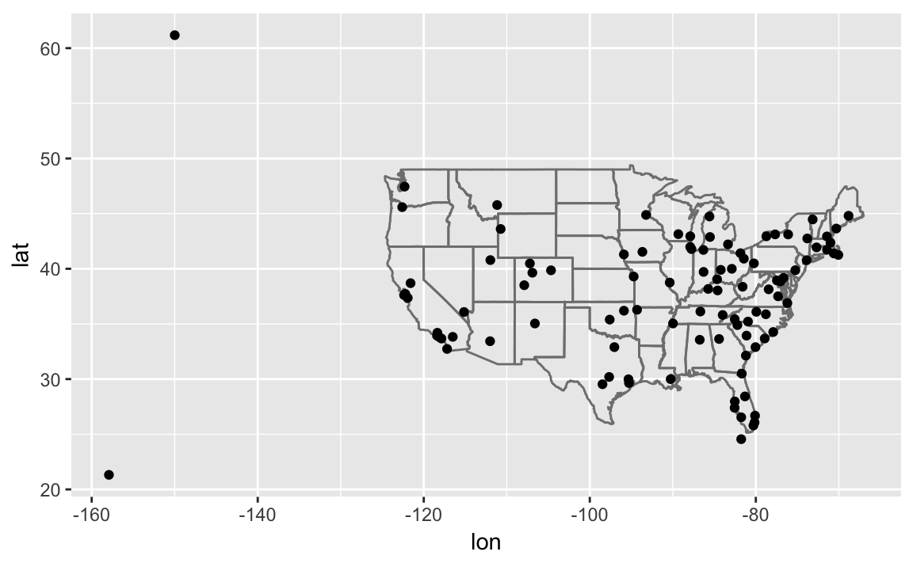

9 Relational Data
9.1 Prerequisites
library("tidyverse")
library("nycflights13")Topics, functions
- keys: primary key, foreign key,
- mutating joins:
left_join,right_join,inner_join,full_join mergevs. joins- filtering joins:
semi_join,anti_join - set operations:
intersect,union,setdiff
TODO: fuzzy joining
9.2 nycflights13
NOTES
nycflights13 is an example of a data-only R package. R packages can contain both functions and data. Since data-sets can get large, often they can be packaged as their own dataset. These sorts of data-only R packages make it convenient for R users to access your data, but it should not be the only way you provide your research data. Not everyone uses R, so the original data should be provided in a program agnostic format (e.g. csv files). This also holds for those using Stata; they should not be distributing data in .dta format files specific to Stata (even if as we saw earlier, other programs can read that data.) Another example of a data-only R package is gapminder.
How does Hadley create his diagrams?
The four tables in the nycflights13 package:
airlines
#> # A tibble: 16 × 2
#> carrier name
#> <chr> <chr>
#> 1 9E Endeavor Air Inc.
#> 2 AA American Airlines Inc.
#> 3 AS Alaska Airlines Inc.
#> 4 B6 JetBlue Airways
#> 5 DL Delta Air Lines Inc.
#> 6 EV ExpressJet Airlines Inc.
#> # ... with 10 more rows
airports
#> # A tibble: 1,458 × 8
#> faa name lat lon alt tz dst
#> <chr> <chr> <dbl> <dbl> <int> <dbl> <chr>
#> 1 04G Lansdowne Airport 41.1 -80.6 1044 -5 A
#> 2 06A Moton Field Municipal Airport 32.5 -85.7 264 -6 A
#> 3 06C Schaumburg Regional 42.0 -88.1 801 -6 A
#> 4 06N Randall Airport 41.4 -74.4 523 -5 A
#> 5 09J Jekyll Island Airport 31.1 -81.4 11 -5 A
#> 6 0A9 Elizabethton Municipal Airport 36.4 -82.2 1593 -5 A
#> # ... with 1,452 more rows, and 1 more variables: tzone <chr>
planes
#> # A tibble: 3,322 × 9
#> tailnum year type manufacturer model engines
#> <chr> <int> <chr> <chr> <chr> <int>
#> 1 N10156 2004 Fixed wing multi engine EMBRAER EMB-145XR 2
#> 2 N102UW 1998 Fixed wing multi engine AIRBUS INDUSTRIE A320-214 2
#> 3 N103US 1999 Fixed wing multi engine AIRBUS INDUSTRIE A320-214 2
#> 4 N104UW 1999 Fixed wing multi engine AIRBUS INDUSTRIE A320-214 2
#> 5 N10575 2002 Fixed wing multi engine EMBRAER EMB-145LR 2
#> 6 N105UW 1999 Fixed wing multi engine AIRBUS INDUSTRIE A320-214 2
#> # ... with 3,316 more rows, and 3 more variables: seats <int>,
#> # speed <int>, engine <chr>
weather
#> # A tibble: 26,130 × 15
#> origin year month day hour temp dewp humid wind_dir wind_speed
#> <chr> <dbl> <dbl> <int> <int> <dbl> <dbl> <dbl> <dbl> <dbl>
#> 1 EWR 2013 1 1 0 37.0 21.9 54.0 230 10.4
#> 2 EWR 2013 1 1 1 37.0 21.9 54.0 230 13.8
#> 3 EWR 2013 1 1 2 37.9 21.9 52.1 230 12.7
#> 4 EWR 2013 1 1 3 37.9 23.0 54.5 230 13.8
#> 5 EWR 2013 1 1 4 37.9 24.1 57.0 240 15.0
#> 6 EWR 2013 1 1 6 39.0 26.1 59.4 270 10.4
#> # ... with 2.612e+04 more rows, and 5 more variables: wind_gust <dbl>,
#> # precip <dbl>, pressure <dbl>, visib <dbl>, time_hour <dttm>9.2.1 Exercises
- Imagine you wanted to draw (approximately) the route each plane flies from its origin to its destination. What variables would you need? What tables would you need to combine?
flightstable:originanddestairportstable: longitude and latitude variables- We would merge the
flightswith airports twice: once to get the location of theoriginairport, and once to get the location of thedestairport.
- I forgot to draw the relationship between weather and airports. What is the relationship and how should it appear in the diagram?
The variable origin in weather is matched with faa in airports.
- weather only contains information for the origin (NYC) airports. If it contained weather records for all airports in the USA, what additional relation would it define with
flights?
year, month, day, hour, origin in weather would be matched to year, month, day, hour, dest in flight (though it should use the arrival date-time values for dest if possible).
- We know that some days of the year are “special”, and fewer people than usual fly on them. How might you represent that data as a data frame? What would be the primary keys of that table? How would it connect to the existing tables?
I would add a table of special dates. The primary key would be date. It would match to the year, month, day columns of `flights.
9.3 Keys
- Add a surrogate key to flights.
I add the column flight_id as a surrogate key. I sort the data prior to making the key, even though it is not strictly necessary, so the order of the rows has some meaning.
flights %>%
arrange(year, month, day, sched_dep_time, carrier, flight) %>%
mutate(flight_id = row_number()) %>%
glimpse()
#> Observations: 336,776
#> Variables: 20
#> $ year <int> 2013, 2013, 2013, 2013, 2013, 2013, 2013, 2013,...
#> $ month <int> 1, 1, 1, 1, 1, 1, 1, 1, 1, 1, 1, 1, 1, 1, 1, 1,...
#> $ day <int> 1, 1, 1, 1, 1, 1, 1, 1, 1, 1, 1, 1, 1, 1, 1, 1,...
#> $ dep_time <int> 517, 533, 542, 544, 554, 559, 558, 559, 558, 55...
#> $ sched_dep_time <int> 515, 529, 540, 545, 558, 559, 600, 600, 600, 60...
#> $ dep_delay <dbl> 2, 4, 2, -1, -4, 0, -2, -1, -2, -2, -3, NA, 1, ...
#> $ arr_time <int> 830, 850, 923, 1004, 740, 702, 753, 941, 849, 8...
#> $ sched_arr_time <int> 819, 830, 850, 1022, 728, 706, 745, 910, 851, 8...
#> $ arr_delay <dbl> 11, 20, 33, -18, 12, -4, 8, 31, -2, -3, -8, NA,...
#> $ carrier <chr> "UA", "UA", "AA", "B6", "UA", "B6", "AA", "AA",...
#> $ flight <int> 1545, 1714, 1141, 725, 1696, 1806, 301, 707, 49...
#> $ tailnum <chr> "N14228", "N24211", "N619AA", "N804JB", "N39463...
#> $ origin <chr> "EWR", "LGA", "JFK", "JFK", "EWR", "JFK", "LGA"...
#> $ dest <chr> "IAH", "IAH", "MIA", "BQN", "ORD", "BOS", "ORD"...
#> $ air_time <dbl> 227, 227, 160, 183, 150, 44, 138, 257, 149, 158...
#> $ distance <dbl> 1400, 1416, 1089, 1576, 719, 187, 733, 1389, 10...
#> $ hour <dbl> 5, 5, 5, 5, 5, 5, 6, 6, 6, 6, 6, 6, 6, 6, 6, 6,...
#> $ minute <dbl> 15, 29, 40, 45, 58, 59, 0, 0, 0, 0, 0, 0, 0, 0,...
#> $ time_hour <dttm> 2013-01-01 05:00:00, 2013-01-01 05:00:00, 2013...
#> $ flight_id <int> 1, 2, 3, 4, 5, 6, 7, 8, 9, 10, 11, 12, 13, 14, ...Identify the keys in the following datasets
Lahman::Battingbabynames::babynamesnasaweather::atmosfueleconomy::vehiclesggplot2::diamonds
(You might need to install some packages and read some documentation.)
The primary key for Lahman::Batting is playerID, yearID, stint. It is not simply playerID, yearID because players can have different stints in different leagues within the same year.
Lahman::Batting %>%
group_by(playerID, yearID, stint) %>%
filter(n() > 1) %>%
nrow()
#> [1] 0The primary key for babynames::babynames is year, sex, name. It is no simply year, name since names can appear for both sexes with different counts.
babynames::babynames %>%
group_by(year, sex, name) %>%
filter(n() > 1) %>%
nrow()
#> [1] 0The primary key for nasaweather::atmos is the location and time of the measurement: lat, long, year, month.
nasaweather::atmos %>%
group_by(lat, long, year, month) %>%
filter(n() > 1) %>%
nrow()
#> [1] 0The column id (unique EPA identifier) is the primary key for fueleconomy::vehicles:
fueleconomy::vehicles %>%
group_by(id) %>%
filter(n() > 1) %>%
nrow()
#> [1] 0There is no primary key for ggplot2::diamonds. Using all variables in the data frame, the number of distinct rows is less than the total number of rows, meaning no combination of variables uniquely identifies the observations.
ggplot2::diamonds %>%
distinct() %>%
nrow()
#> [1] 53794
nrow(ggplot2::diamonds)
#> [1] 53940- Draw a diagram illustrating the connections between the Batting, Master, and Salaries tables in the Lahman package. Draw another diagram that shows the relationship between Master, Managers, AwardsManagers.
Batting- primary key:
playerID,yearID,stint - foreign keys:
playerID->Master.playerID
Master- primary key:
playerID Salaries- primary key:
yearID,teamID,playerID - foreign keys:
playerID->Master.playerID
Managers:- primary key:
yearID,playerID,teamID,inseason - foreign keys:
playerID->Master.teamID
Managers:- primary key:
awardID,yearID AwardsManagers:- primary key:
playerID,awardID,yearID(since there are ties and whiletiedistinguishes those awards it hasNAvalues) - foreign keys:
playerID->Master.playerIDplayerID,yearID,lgID->Managers.playerID,yearID,lgID
lgID and teamID appear in multiple tables, but should be primary keys for league and team tables.
- How would you characterise the relationship between the Batting, Pitching, and Fielding tables?
9.4 Mutating Joins
flights2 <- flights %>%
select(year:day, hour, origin, dest, tailnum, carrier)
flights2 %>%
select(-origin, -dest) %>%
left_join(airlines, by = "carrier")
#> # A tibble: 336,776 × 7
#> year month day hour tailnum carrier name
#> <int> <int> <int> <dbl> <chr> <chr> <chr>
#> 1 2013 1 1 5 N14228 UA United Air Lines Inc.
#> 2 2013 1 1 5 N24211 UA United Air Lines Inc.
#> 3 2013 1 1 5 N619AA AA American Airlines Inc.
#> 4 2013 1 1 5 N804JB B6 JetBlue Airways
#> 5 2013 1 1 6 N668DN DL Delta Air Lines Inc.
#> 6 2013 1 1 5 N39463 UA United Air Lines Inc.
#> # ... with 3.368e+05 more rows9.4.1 Exercises
- Compute the average delay by destination, then join on the
airportsdata frame so you can show the spatial distribution of delays. Here’s an easy way to draw a map of the United States:
airports %>%
semi_join(flights, c("faa" = "dest")) %>%
ggplot(aes(lon, lat)) +
borders("state") +
geom_point() +
coord_quickmap()
(Don’t worry if you don’t understand what semi_join() does — you’ll learn about it next.)
avg_dest_delays <-
flights %>%
group_by(dest) %>%
# arrival delay NA's are cancelled flights
summarise(delay = mean(arr_delay, na.rm = TRUE)) %>%
inner_join(airports, by = c(dest = "faa"))
avg_dest_delays %>%
ggplot(aes(lon, lat, colour = delay)) +
borders("state") +
geom_point() +
coord_quickmap()
You might want to use the size or colour of the points to display the average delay for each airport.
- Add the location of the origin and destination (i.e. the lat and lon) to flights.
flights %>%
left_join(airports, by = c(dest = "faa")) %>%
left_join(airports, by = c(origin = "faa")) %>%
head()
#> # A tibble: 6 × 33
#> year month day dep_time sched_dep_time dep_delay arr_time
#> <int> <int> <int> <int> <int> <dbl> <int>
#> 1 2013 1 1 517 515 2 830
#> 2 2013 1 1 533 529 4 850
#> 3 2013 1 1 542 540 2 923
#> 4 2013 1 1 544 545 -1 1004
#> 5 2013 1 1 554 600 -6 812
#> 6 2013 1 1 554 558 -4 740
#> # ... with 26 more variables: sched_arr_time <int>, arr_delay <dbl>,
#> # carrier <chr>, flight <int>, tailnum <chr>, origin <chr>, dest <chr>,
#> # air_time <dbl>, distance <dbl>, hour <dbl>, minute <dbl>,
#> # time_hour <dttm>, name.x <chr>, lat.x <dbl>, lon.x <dbl>, alt.x <int>,
#> # tz.x <dbl>, dst.x <chr>, tzone.x <chr>, name.y <chr>, lat.y <dbl>,
#> # lon.y <dbl>, alt.y <int>, tz.y <dbl>, dst.y <chr>, tzone.y <chr>- Is there a relationship between the age of a plane and its delays?
Suprisingly not. If anything (departure) delay seems to decrease slightly with age (perhaps because of selection):
plane_ages <-
planes %>%
mutate(age = 2013 - year) %>%
select(tailnum, age)
flights %>%
inner_join(plane_ages, by = "tailnum") %>%
group_by(age) %>%
filter(!is.na(dep_delay)) %>%
summarise(delay = mean(dep_delay)) %>%
ggplot(aes(x = age, y = delay)) +
geom_point() +
geom_line()
#> Warning: Removed 1 rows containing missing values (geom_point).
#> Warning: Removed 1 rows containing missing values (geom_path).
- What weather conditions make it more likely to see a delay?
Almost any amount or precipitation is associated with a delay, though not as strong a trend after 0.02 in as one would expect
flight_weather <-
flights %>%
inner_join(weather, by = c("origin" = "origin",
"year" = "year",
"month" = "month",
"day" = "day",
"hour" = "hour"))
flight_weather %>%
group_by(precip) %>%
summarise(delay = mean(dep_delay, na.rm = TRUE)) %>%
ggplot(aes(x = precip, y = delay)) +
geom_line() + geom_point()
- What happened on June 13 2013? Display the spatial pattern of delays, and then use Google to cross-reference with the weather.
There was a large series of storms (derechos) in the southeastern US (see June 12-13, 2013 derecho series)
The largest delays are in Tennessee (Nashville) and the Southeaste and Midwest (the location of the derechos).
library(viridis)
flights %>%
filter(year == 2013, month == 6, day == 13) %>%
group_by(dest) %>%
summarise(delay = mean(arr_delay, na.rm = TRUE)) %>%
inner_join(airports, by = c("dest" = "faa")) %>%
ggplot(aes(y = lat, x = lon, size = delay, colour = delay)) +
borders("state") +
geom_point() +
coord_quickmap() +
scale_color_viridis()
#> Warning: Removed 3 rows containing missing values (geom_point).
9.5 Filtering Joins
semi_join: keep all obs inxwith match inyanti_join: drop all obs inxwith a match iny
9.5.1 Exercises
- What does it mean for a flight to have a missing
tailnum? What do the tail numbers that don’t have a matching record in planes have in common? (Hint: one variable explains ~90% of the problems.)
American Airlines (AA) and Envoy Airlines (MQ) don’t report tail numbers.
flights %>%
anti_join(planes, by = "tailnum") %>%
count(carrier, sort = TRUE)
#> # A tibble: 10 × 2
#> carrier n
#> <chr> <int>
#> 1 MQ 25397
#> 2 AA 22558
#> 3 UA 1693
#> 4 9E 1044
#> 5 B6 830
#> 6 US 699
#> # ... with 4 more rows- Filter flights to only show flights with planes that have flown at least 100 flights.
planes_gt100 <-
filter(flights) %>%
group_by(tailnum) %>%
count() %>%
filter(n > 100)
flights %>%
semi_join(planes_gt100, by = "tailnum")
#> # A tibble: 229,202 × 19
#> year month day dep_time sched_dep_time dep_delay arr_time
#> <int> <int> <int> <int> <int> <dbl> <int>
#> 1 2013 1 1 1604 1510 54 1817
#> 2 2013 1 1 2100 2100 0 2307
#> 3 2013 1 2 827 835 -8 1059
#> 4 2013 1 2 2014 2020 -6 2256
#> 5 2013 1 4 1621 1625 -4 1853
#> 6 2013 1 5 834 835 -1 1050
#> # ... with 2.292e+05 more rows, and 12 more variables:
#> # sched_arr_time <int>, arr_delay <dbl>, carrier <chr>, flight <int>,
#> # tailnum <chr>, origin <chr>, dest <chr>, air_time <dbl>,
#> # distance <dbl>, hour <dbl>, minute <dbl>, time_hour <dttm>- Combine
fueleconomy::vehiclesandfueleconomy::commonto find only the records for the most common models.
The table fueleconomy::common identifies vehicles by make and model:
glimpse(fueleconomy::vehicles)
#> Observations: 33,442
#> Variables: 12
#> $ id <int> 27550, 28426, 27549, 28425, 1032, 1033, 3347, 13309, 133...
#> $ make <chr> "AM General", "AM General", "AM General", "AM General", ...
#> $ model <chr> "DJ Po Vehicle 2WD", "DJ Po Vehicle 2WD", "FJ8c Post Off...
#> $ year <int> 1984, 1984, 1984, 1984, 1985, 1985, 1987, 1997, 1997, 19...
#> $ class <chr> "Special Purpose Vehicle 2WD", "Special Purpose Vehicle ...
#> $ trans <chr> "Automatic 3-spd", "Automatic 3-spd", "Automatic 3-spd",...
#> $ drive <chr> "2-Wheel Drive", "2-Wheel Drive", "2-Wheel Drive", "2-Wh...
#> $ cyl <int> 4, 4, 6, 6, 4, 6, 6, 4, 4, 6, 4, 4, 6, 4, 4, 6, 5, 5, 6,...
#> $ displ <dbl> 2.5, 2.5, 4.2, 4.2, 2.5, 4.2, 3.8, 2.2, 2.2, 3.0, 2.3, 2...
#> $ fuel <chr> "Regular", "Regular", "Regular", "Regular", "Regular", "...
#> $ hwy <int> 17, 17, 13, 13, 17, 13, 21, 26, 28, 26, 27, 29, 26, 27, ...
#> $ cty <int> 18, 18, 13, 13, 16, 13, 14, 20, 22, 18, 19, 21, 17, 20, ...
glimpse(fueleconomy::common)
#> Observations: 347
#> Variables: 4
#> $ make <chr> "Acura", "Acura", "Acura", "Acura", "Acura", "Audi", "Au...
#> $ model <chr> "Integra", "Legend", "MDX 4WD", "NSX", "TSX", "A4", "A4 ...
#> $ n <int> 42, 28, 12, 28, 27, 49, 49, 66, 20, 12, 46, 20, 30, 29, ...
#> $ years <int> 16, 10, 12, 14, 11, 19, 15, 19, 19, 12, 20, 15, 16, 16, ...fueleconomy::vehicles %>%
semi_join(fueleconomy::common, by = c("make", "model"))
#> # A tibble: 14,531 × 12
#> id make model year class trans
#> <int> <chr> <chr> <int> <chr> <chr>
#> 1 1833 Acura Integra 1986 Subcompact Cars Automatic 4-spd
#> 2 1834 Acura Integra 1986 Subcompact Cars Manual 5-spd
#> 3 3037 Acura Integra 1987 Subcompact Cars Automatic 4-spd
#> 4 3038 Acura Integra 1987 Subcompact Cars Manual 5-spd
#> 5 4183 Acura Integra 1988 Subcompact Cars Automatic 4-spd
#> 6 4184 Acura Integra 1988 Subcompact Cars Manual 5-spd
#> # ... with 1.452e+04 more rows, and 6 more variables: drive <chr>,
#> # cyl <int>, displ <dbl>, fuel <chr>, hwy <int>, cty <int>Find the 48 hours (over the course of the whole year) that have the worst delays. Cross-reference it with the weather data. Can you see any patterns?
What does
anti_join(flights, airports, by = c("dest" = "faa"))tell you? What doesanti_join(airports, flights, by = c("faa" = "dest"))tell you?
anti_join(flights, airports, by = c("dest" = "faa")) are flights that go to an airport that is not in FAA list of destinations, likely foreign airports.
anti_join(airports, flights, by = c("faa" = "dest")) are US airports that don’t have a flight in the data, meaning that there were no flights to that aiport from New York in 2013.
- You might expect that there’s an implicit relationship between plane and airline, because each plane is flown by a single airline. Confirm or reject this hypothesis using the tools you’ve learned above.
There isn’t such a relationship, since planes can be sold or airlines can merge. However, that doesn’t necessarily mean that such a plane will appear in this data. There are eight planes which
flights %>%
group_by(tailnum, carrier) %>%
count() %>%
filter(n() > 1) %>%
select(tailnum) %>%
distinct()
#> Source: local data frame [18 x 1]
#> Groups: tailnum [18]
#>
#> tailnum
#> <chr>
#> 1 N146PQ
#> 2 N153PQ
#> 3 N176PQ
#> 4 N181PQ
#> 5 N197PQ
#> 6 N200PQ
#> # ... with 12 more rows9.6 Set operations
No exercises